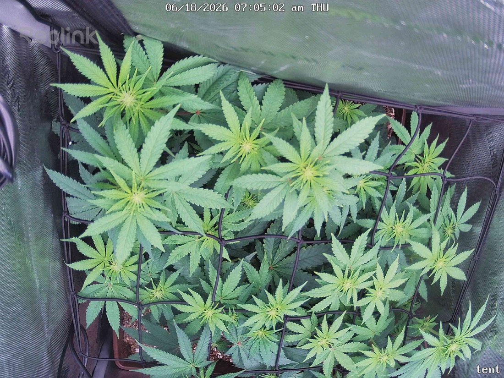

← All reports
Jun 18, 2026
Thu Jun 18, 2026 — 7:05 AM

Prognosis
Grow check — 06/18, Day 15 of 12/12 (flip June 3)
- What changed: Canopy looks slightly fuller and more evenly leveled into the scrog netting — colas are filling the squares well. Several growth tips show the lighter lime-green of active new growth, which is exactly what you want mid-stretch. Posture is flat and even; the horizontal LST training is paying off.
- Color: Healthy deep green across the canopy with normal lighter new-growth tips. No yellowing, no interveinal chlorosis, no edge/tip burn at 700 PPFD center.
- Stress signs: None notable. No tacoing, no bleaching on the top colas closest to the light, no clawing or heat droop in this morning (lights-on) shot. Margins look smooth — no mite stippling visible at this resolution.
- Pests: No webbing or fresh stippling spotted. Consistent with your last several clean inspections — the Green Cleaner program looks to be working. Stay on schedule for one more round to clear the egg-hatch tail.
- Phase check: Right on track. ~15 days into flower on a photoperiod, you should be deep in the stretch with bud sites forming at every node — that matches what's here. Stretch typically winds down around week 3, so expect another week of vertical/lateral push.
- Structure: Good multi-cola spread from the topping + LST. Canopy is even enough that the 700 center PPFD is reaching most tops without burning — light distribution looks appropriate.
Suggested next actions:
- No action needed today — continue current routine.
- Keep the next Green Cleaner round on its ~3-day cadence (4th treatment due ~6/19) to fully close the mite cycle, then reassess.
- Watch for the stretch to taper over the next 5–7 days; once tops settle, you can hold or nudge light slightly. Next water is likely due ~6/19 (4 days from the 6/15 tea).
Overall: Healthy, even, well-trained canopy right where it should be at Day 15 of flower — no stress, pest pressure looks controlled.